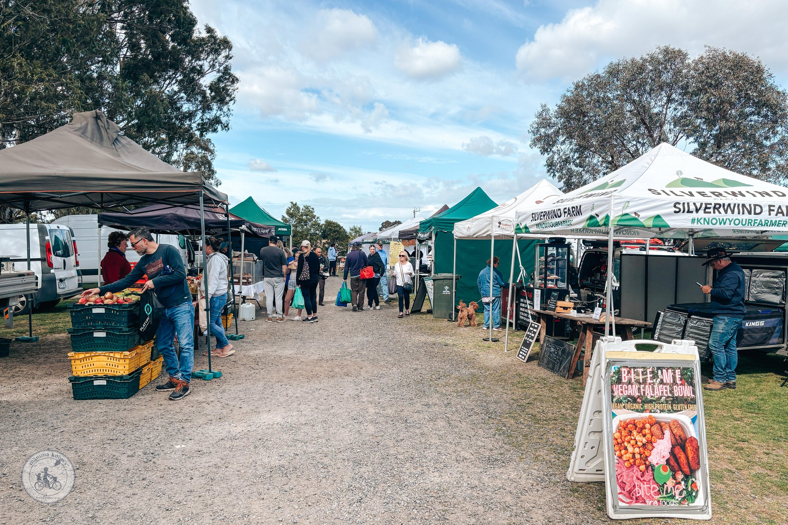

Section 1 Where can you find a market?
My main source is the Australian Farmers' Markets Association directory. It holds 178 listings, which become 175 markets once duplicates are removed. New South Wales and Victoria have 70% of them. Queensland, a major food-producing state, has only thirteen.
A few organisations run several markets each; the rest are run independently.
Australian Farmers' Markets Association, “Find a Market” directory, scraped 20 September 2026 · boundaries ABS ASGS Edition 3 (CC BY 4.0)
The mix of weekly, fortnightly and monthly markets in each state.

Section 2 How far to the nearest market?
Relative to population, markets are far more common outside the capital cities. Regional Victoria and regional NSW have the highest density in the country, while Greater Brisbane, home to 2.8 million people, has only two. Regional towns are well served for their size; the problem is that there are few of them, and they are far apart. Click any two regions or city dots on the map to compare them.
AFMA directory, 2026 · opening hours parsed from the directory's hours table
AFMA directory, 2026 · ABS Regional population and National, state and territory population, 30 June 2025 · ABS ASGS Edition 3
Great-circle distance from council area centroids to the nearest of 174 geocoded markets · ABS ASGS Edition 3 LGA 2023 boundaries
Distance from each council area's centre to the nearest market in the AFMA directory, 2026 · ABS ASGS Edition 3 LGA 2023 boundaries
Section 3 Where is our food produced?
Australian farms produced $70.9 billion of food and fibre in 2020–21. Meat and grain make up almost two thirds of it. Fruit, nuts and vegetables, the staples of a market stall, are under a fifth.
Each square is 1% of the total, about 73,000 tonnes. Nearly a third is lost on the farm, before food ever reaches a shop.
DCCEEW, National Food Waste Baseline (2016–17 reference year) · the published baseline names only the three largest sectors
ABS, Value of Agricultural Commodities Produced, Australia, 2020–21 (CC BY 4.0) · categories follow the ABS groupings
ABS, Value of Agricultural Commodities Produced by LGA, 2020–21 · ABS apportions these from SA2 estimates by area, and suppressed values count as zero, so a council with no symbol may still farm · poultry and pigs are heavily suppressed (72% and 88% of the national value is shown) · sizes cap at $2,000 a hectare
Our World in Data, from Poore & Nemecek (2018), Science · CC BY 4.0
Section 4 Can markets compete with the big two?
At a farmers' market, the producer keeps the sale price minus a stall fee, which is usually under $80. There is no wholesaler, distributor or retailer taking a cut. The best evidence on stallholders is a 2014 survey of 286 of them by the Rural Industries Research and Development Corporation (RIRDC). It is now quite old, but it is still the most detailed Australian dataset available. The competition is Coles and Woolworths.
Fee per market day. Mean $61; the full range runs from $3 to $594.
RIRDC Publication 14/040 (2014), n = 286 stallholders
Distance to their main market. 57% travel 50 km or less; the line is the running total.
RIRDC Publication 14/040, Understanding the Characteristics of Australian Farmers' Markets (2014), n = 286 stallholders
Every stallholder sells at a farmers' market by definition but only 7% sell only there, and 30% take less than a quarter of their income from it.
RIRDC Publication 14/040 (2014), Figure 19 · shares sum to more than 100% because stallholders use several channels
Coles and Woolworths together take about two-thirds of Australian supermarket and liquor sales: two companies hold most of a market shared with thousands of other grocers.
Woolworths, Endeavour Group, Coles Myer, Coles Group and Wesfarmers annual reports and results (supermarkets plus each company's liquor chains; petrol, Coles Express and New Zealand excluded) as a share of ABS Retail Trade, Australia turnover for supermarkets and grocery plus liquor retailing (series A3349862V and A3349462J, CC BY 4.0)